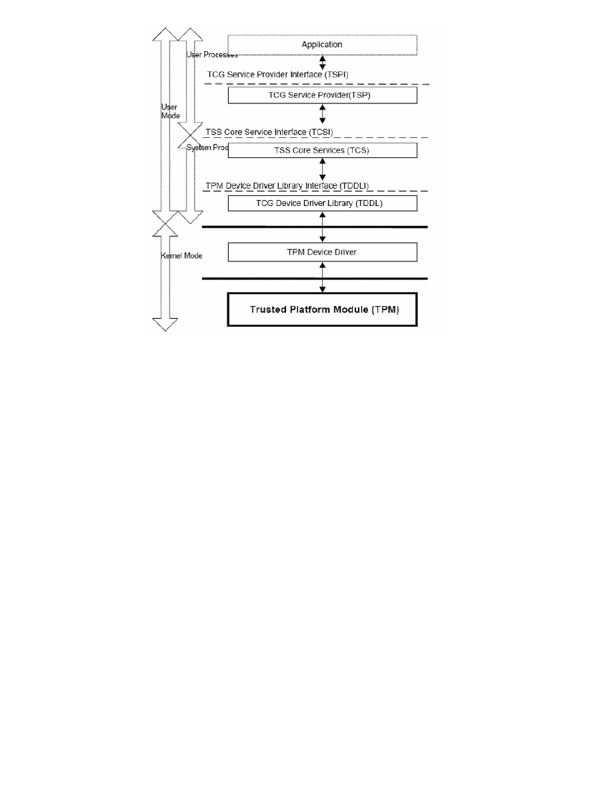
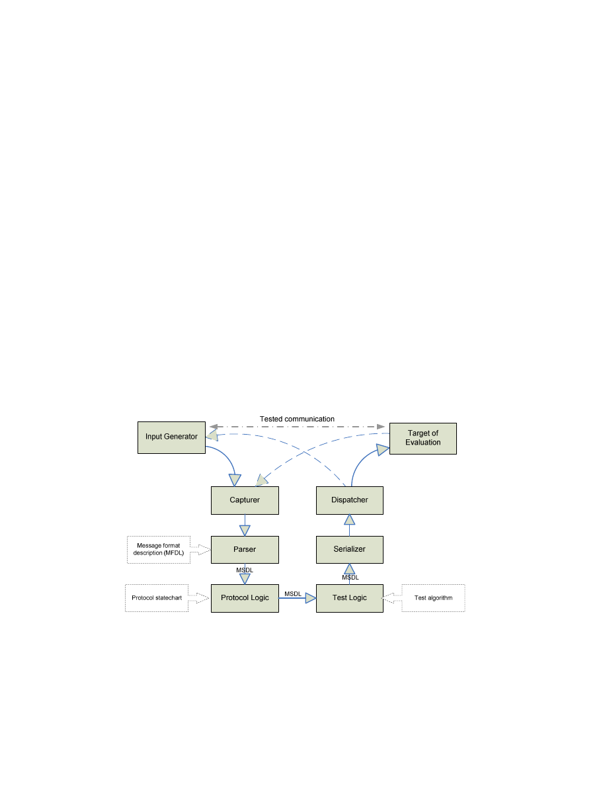
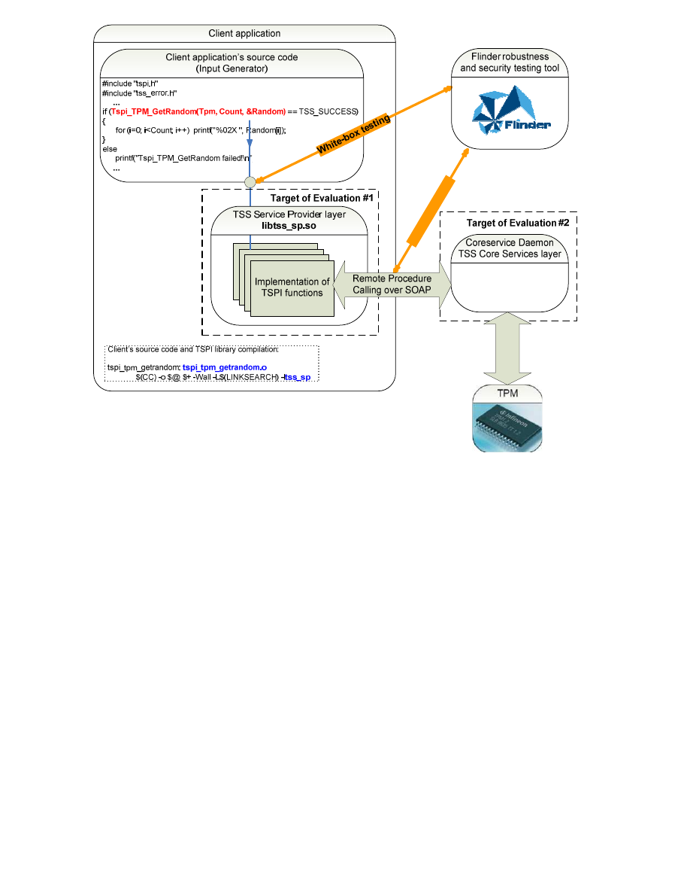
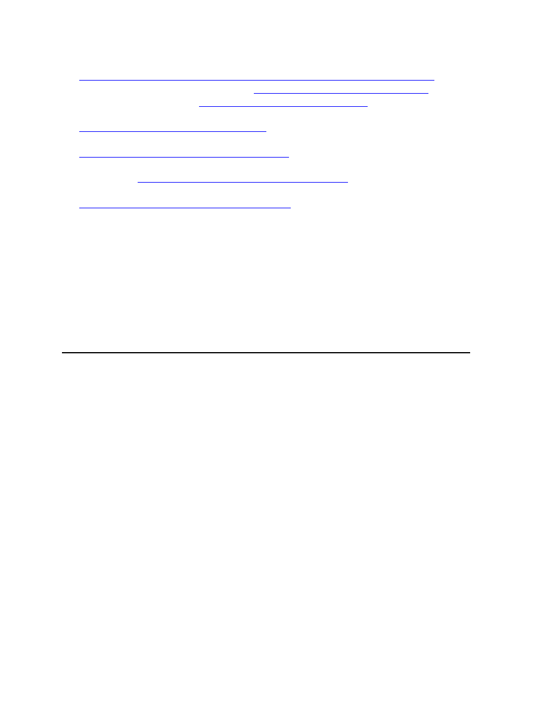

1
OpenTC Newsletter
February 2008
From the Open Trusted Computing (OpenTC) research project, sponsored by the European
Union.
In this issue:
-
Editorial: Research in Villach and Budapest
-
TRUST2008: Introduction of speakers
-
Case study: automated security testing on the Trusted Computing platform
-
Recent OpenTC publications
Editorial: Research in Villach and Budapest
By: Arnd Weber, ITAS, Forschungszentrum Karlsruhe, Germany
Dear Reader,
This is our fourth newsletter. Its first article introduces the presenters at the TRUST2008
conference in Villach, Austria, on March 12 and 13, which was co-organized by OpenTC.
The main topic of this newsletter is automated security testing. The second article describes
how testing was performed for the Infineon “TSS stack” for Linux as a target of evaluation.
The TSS (TCG Software Stack) provides access to the Trusted Platform Module. The work
was conducted by our partner SEARCH Laboratory, in Budapest, Hungary. In contrast to
common security testing activities for industrial components, which tend to be subject to non-
disclosure agreements, our project presents methodologies and achievements to the public,
reporting on testing a Linux TSS stack and fixing its bugs.
You may notice that we have changed the format of the newsletter, and we would appreciate
some feedback on it. Do you have any comments concerning the articles in the OpenTC
newsletter? Is there a topic that you would like to see addressed or described in more detail in
a future issue? We welcome your suggestions on the OpenTC newsletter, hoping that it can
become a platform for discussing the topics covered by the project. Please feel free to contact
us at the following address with any questions, comments or ideas: editor (at) opentc.net.
Our thanks go to Hans Brandl, Richard Brown, Alison Hepper, Dirk Kuhlmann, Stephane Lo
Presti, Armand Puccetti and Dirk Weber for their help in preparing this issue.
TRUST2008: Announcement of speakers
By: Arnd Weber, ITAS, Forschungszentrum Karlsruhe, Germany
From our issue of October 2007, the reader may recall that the TRUST2008 event in Villach,
Austria, hosts the following events:
2
•
Scientific conference, March 11th - 12th 2008
•
Austrian Trust-in-IT Forum, March 11th 2008
•
TRUST2008 Educational Event, March 10th - 13th 2008
This article introduces the keynote speakers and the technical papers which have been
accepted for presentation. The following keynote speakers will present their views:
•
Paul England, Microsoft, an author of the TPM specification
•
David Grawrock, Intel, Chair of the Trusted Computing Group TPM workgroup
•
Ronald Perez, IBM, Vice President of the Trusted Computing Group
•
Bart Preneel, Katholieke Universiteit Leuven, has been a member of the TCPA Advisory
Board
•
Martin Sadler, director in HP Labs
•
Dirk van Rooy, European Commission, Directorate-General Information Society and Me-
dia
Since the review process has been finalised, we can announce that the following technical
papers will be presented:
•
Alexander Böttcher, Bernhard Kauer, Hermann Härtig: Trusted computing serving an
anonymity service
•
Sergey Bratus, Nihal D'Cunha, Evan Sparks, Sean Smith: TOCTOU, Traps, and Trusted
Computing
•
Liqun Chen, Ernie Brickell, Jiangtao Li: A New Direct Anonymous Attestation Scheme
from Bilinear Maps
•
Konstantin Hyppönen, Marko Hassinen, Elena Trichina: Combining Biometric Authenti-
cation with Privacy-Enhancing Technologies
•
Konstantin Hyppönen, Marko Hassinen, Elena Trichina: Pseudonymous Mobile Identity
Architecture Based on Government-Supported PKI
•
Adrian Leung, Liqun Chen, Chris Mitchell: On a Possible Privacy Flaw in Direct Anony-
mous Attestation (DAA)
•
Jork Loeser, Paul England: Para-Virtualized TPM Sharing
•
Benjamin Monate, Julien Signoles: Slicing for Security of Code
•
Dries Schellekens, Pim Tuyls: Embedded Trusted Computing with Authenticated Non-
Volatile Memory
•
Heiko Stamer, Mario Strasser: A Software-Based Trusted Platform Module Emulator
•
Clark Thomborson: A Model for New Zealand's Identity Verification Service
•
Tobias Vejda, Ronald Toegl, Martin Pirker: Towards Trust Services for Language-Based
Virtual Machines for Grid Computing
•
Thomas Weigold, Thorsten Kramp, Reto Hermann, Frank Hoering, Peter Buhler: The
ZTIC – An Efficient Defence against Man-in-the-Middle and Malicious Software Attacks
The OpenTC consortium will present its latest prototype, called “Corporate Computing at
Home”, providing TC-supported isolation between e.g. a corporate compartment and a private
one.
Detailed information about the events is available at
http://www.trust2008.eu
.
Contact: TRUST2008 (at) technikon.com
With thanks to Taru Kankkunen, Klaus-Michael Koch, Peter Lipp, Karoline Oberlerchner,
Ahmad-Reza Sadeghi, and the reviewers.

3
Case study: automated security testing on the Trusted Computing platform
By: Gábor K
ı
szegi, Gergely Tóth, Zoltán Hornák, Budapest University of Technology and
Economics, Department of Measurement and Information Systems, SEARCH Laboratory,
Hungary
This article is a case study summarizing the experience gained in automated security testing
with the Flinder framework within the OpenTC project. The size of the task is best
demonstrated by the following figures: more than 130,000 tests were carried out on the
250,000-line TCG Software Stack (TSS) implementation, requiring more than two weeks of
continuous operation on four machines and revealing several security-relevant programming
bugs and even some remotely exploitable vulnerabilities
1. Introduction
In most cases, security vulnerabilities found in software applications are caused by minor
programming errors, which can occur anywhere in the code. Filtering them out manually in
large systems can thus be fairly tiring and time-consuming. Fortunately, in the typical, most
dangerous cases (e.g. buffer overflows, integer overflows, printf format string bugs), this task
is not a hopeless one since automated security testing methods can be used to efficiently
detect most of the bugs.
The reason why developers have given little attention to these common mistakes in the past is
that only a fraction of them cause security vulnerabilities, and even fewer can then be
exploited by an attacker.
Nevertheless, this “negligible” number of common programming bugs is responsible for the
majority of known malware, e.g. viruses and worms. They can be used to create networks
organized of hacked computers – so-called “botnets” – which carry out the well-known spam
and phishing attacks.
The popularity of testing-based error detection may well increase in the future, as complete
formal verification of large, complex software is practically infeasible due to the great amount
of time and costs involved. The Flinder automated robustness and security testing tool used in
this project employs error detection via dynamic testing; it is an efficient and fast tool for
finding typical programming errors.
This article summarizes results, experiences and conclusions from an automated security
testing task in which SEARCH Laboratory tested the Linux-based TCG Software Stack (TSS)
implementation developed by Infineon within the Open Trusted Computing (OpenTC) project
funded by the EU 6th Framework Programme.
2. Test scenario
SEARCH Laboratory carried out automated security testing on the TSS implementation of the
OpenTC project, which is based on the specification of the Trusted Computing Group (TCG).
The TSS is a multi-layer software stack providing access to the Trusted Platform Module
(TPM). Applications run by the operating system use the different layers of the TSS to access
Trusted Computing functionality. Figure 1 shows the main structure of the TSS, including its
various layers which run with different privileges (i.e. user mode or kernel mode) and with
different permissions (i.e. user processes or system processes):

4
Figure 1: TCG Software Stack
•
The TSP (TCG Service Provider) layer is implemented in a dynamic library that is linked
to user applications. This layer translates API calls into Simple Object Access Protocol
(SOAP) messages, which are sent via TCP/IP to lower layers of the TSS.
•
The TCS (TSS Core Services) and TCG Device Driver Library (TDDL) layers are imple-
mented in a separate daemon process. This process accepts incoming SOAP requests,
processes them and responds in SOAP responses.
The main target of security testing carried out by SEARCH Laboratory was the Core Services
(TCS) layer, which acts as an interface between user applications and system processes. This
layer needs elevated privileges to the host computer OS. Moreover, this layer implements
relatively complex functionality and is accessible by third parties over SOAP, which runs
over TCP/IP.
These features give the TCS layer a rather broad attack surface. From the perspective of
system security, finding and removing common programming errors in this component is
especially critical and motivated our effort of automated security testing on the imple-
mentation. The TSP layer linked to the user application was tested as well, since it can be
accessed directly by rogue applications.
3. Evaluation approach
For the automated security evaluation of IT systems, three typical approaches exist:
•
Testing, during which test vectors are created and dispatched to the Target of Evaluation
(ToE). Correct/incorrect operation is assessed on the basis of the observations.

5
•
Static source code analysis, which tries to find weaknesses by analysing the source code
(e.g. by finding patterns of typical mistakes).
•
Formal reasoning, which tries to automatically deduce mathematical proofs of properties
of the system (e.g. value of a certain item will always be between 1 and 10 in any state of
the application).
The automated testing approach was chosen for evaluation of the TSS implementation
because it is similar to the approaches used by attackers and can efficiently model the options
open to external adversaries. SEARCH Laboratory used the testing tool Flinder, whose aim is
to discover typical security-related programming bugs (e.g. buffer and integer overflows,
printf format string bugs) in the ToE.
Although other similar testing tools are available on the market, Flinder offered several
advantages, such as Linux support, the option of developing custom test suites for testing and
the ability to execute both black-box and white-box security testing.
In fulfilling its task, Flinder analyses the dynamic behaviour of the ToE during its execution.
White-box testing is done by function-level fault injection using modified source code; by
contrast, the black-box method uses only the binary executable of the program and observes
the given responses to manipulated inputs in order to check whether the ToE acts in an
unexpected way (e.g. halting or freezing).
Flinder is capable of testing both applications and network protocol implementations. It
contains customizable general-purpose modules, which can be set up according to require-
ments. To facilitate its applicability, Flinder supports a wide range of cryptographic and
encoding algorithms for compression, encryption and digital signatures. Handling of
input/output data is easily extensible using Python scripts.
Figure 2: Flinder architecture for black-box testing
The general sequence of one test case in the black-box scenario is as follows (see also Fig. 2):
•
Each test case needs a valid message as input for the manipulation. These are usually gen-
erated by a specific program (called Input Generator).
•
The Capturer module intercepts these valid messages (e.g. from the network).

6
•
The Parser module translates valid messages into an internal Message Structure Descrip-
tion Language (MSDL) according to a given format description (MFDL).
•
The Protocol Logic updates the protocol state-chart on the basis of the type of parsed mes-
sage. Additionally, other actions can be taken according to this status information (e.g.
timeout setup).
•
Subsequently, the Test Logic can modify the message (e.g. change integer values, enlarge
buffers and change their contents) in order to provoke symptoms of the typical errors dur-
ing execution of the ToE.
•
The Serializer then reconstructs the message from the internal representation, which now
includes the modifications made by the Test Logic. Note that the Serializer can recon-
struct internal rules of the modified message, e.g. re-calculate size fields or re-sign a
modified packet.
•
Finally the Dispatcher forwards the recreated message to the ToE and then observes its
reactions to test whether it completes successfully, or whether it sends an error message or
acts inappropriately in any way (e.g. terminates, exhausts system resources or simply
stops responding).
Beyond testing an application as a black-box, Flinder also supports white-box mode testing.
For this type of source-code-based testing, some Flinder stubs are compiled into the ToE. The
aim of inserting these code snippets is to extract the data structures to be modified (e.g.
function parameters or global variables) from the tested software and afterwards inject the
manipulated data back into the program’s internal state. Communication with Flinder is
conducted via inter-process communication. Thus, in the case of white-box testing, the
following sequence of actions is carried out:
•
The ToE is started and sends the variables to be tested to Flinder;
•
Flinder modifies these variables as in black-box testing and sends them back;
•
The ToE receives the modified data and injects them back into its internal state and con-
tinues operation;
•
Finally, Flinder observes the operation of the ToE.
4. Execution of testing
SEARCH Laboratory was looking for bugs at two levels of the TSS implementation. The first
one was the SOAP-based network interface of the TCS. We modelled a black-box, man-in-
the-middle testing via manipulation of Remote Procedure Calling (RPC) parameters in
captured XML messages.
For the platform’s Trusted Service Provider Interface (TSPI), which is a function library, we
employed white-box testing, using functional test applications of the implementation as input
generators that were enhanced with Flinder’s fault-injection technique. This approach also
allowed us to observe the behaviour of the TSP layer (the one above the Core Services).
Figure 3 shows the locations where the tests were introduced.

7
A
P
I
ca
lli
n
g
B
la
c
k
-b
o
x
t
e
s
ti
n
g
K
e
rn
e
l
d
ri
v
e
r
c
a
lls
Figure 3: Locations of the two approaches in the testing environment
5. Initial test results
During initial testing, 135,237 test cases were evaluated (38,106 in black-box mode and
97,131 in white-box mode). Of this huge number, only 403 caused an error in the service.
There was a difference of 3 orders of magnitude between the number of failed and the number
of executed test cases, i.e. only less than 0.3% of the test cases failed. Considering that we
tested more than one hundred thousand cases, this is a very important result. It makes clear
that searching these errors is similar to “looking for a needle in a haystack”. Most probably,
they would not have been found using pure manual testing.
From the 65 functions and 36 SOAP messages tested there were 3 functions (4.6%) and 4
messages (11%), which could have been used in an attack against the platform according to
our analysis. This illustrates that common, security-relevant programming errors cannot be
excluded with absolute confidence, even during the development of security-sensitive
applications. It also confirms the importance of automated security testing: we see no other
way how the software developer could have efficiently eliminated these errors from the final
software. The errors could have been used for various kinds of attacks, ranging from ‘simple’
Denial of Service (DoS) to arbitrary remote code execution in the context of the administrator.
8
6. Regression testing
On the basis of the initial test findings, thorough bug fixing was carried out on the TSS
implementation to address all the weaknesses discovered by the first test run. In order to
verify the correctness of the bug fixes, all failed test cases were re-executed on the updated
software version.
In the end, SEARCH Laboratory could certify that no identified weaknesses remained in the
final TSS implementation, indicating that typical security-relevant programming bugs had
been systematically eliminated. The trustworthiness of this important TC component was
thereby significantly improved.
The full report on the whole testing procedure will be available at the OpenTC website as part
of the official deliverable D07.2 Verification and Validation (V&V) Report #2.
7. Conclusion
For industrial projects, security testing usually falls under strict non-disclosure regulations.
An open EU FP6 Research & Development project such as OpenTC is a unique opportunity
for introducing the achievements of security testing to the wider public.
From our testing, the following three main lessons can be learnt:
•
To this day, developers cause typical, security-relevant bugs even in security-critical ap-
plications due to human error, and even though these errors have been well-known and
analyzed for more than 15 years.
•
Complete manual testing is practically infeasible for highly complexity software like the
TSS implementation; therefore automated techniques capable of carrying out such huge
tasks efficiently are indispensable.
•
Automated methods represent useful tools for protection against typical security-relevant
errors. They support to evaluate software functionality of the target systems in a system-
atic fashion. By eliminating these errors, the overall security level, quality and trustwor-
thiness of applications is improved.
About the authors:
The authors are researchers at the Budapest University of Technology and Economics (BME),
SEARCH Laboratory (
http://www.mit.bme.hu/research/search
). Zoltán Hornák (MSc) is the
head of the laboratory; he has been involved in security research for more than 10 years
focusing on mobile and embedded systems, dependable infrastructures, biometrics and
intelligent video surveillance. Gergely Tóth (MSc, CISA) is the technical project leader for
OpenTC at SEARCH Laboratory, his areas of interest include security assessments,
automated security testing, Digital Rights Management and anonymity. Gábor Köszegi (MSc)
is a junior engineer at SEARCH Laboratory focusing on automated security testing and
secuity auditing.

9
References:
•
The full report about the testing procedure is available at the OpenTC website as part of
the official deliverable D07.2 V&V Report #2:
http://www.opentc.net/deliverables2007/Open_TC_D07.2_V_and_V_report_2.pdf
•
Flinder whitepaper & test methodology:
http://www.flinder.hu/library/index.html
•
Trusted Computing Group:
http://www.trustedcomputinggroup.org
•
Buffer overflow: Aleph1. In: Phrack magazine, Volume Seven, Issue 49, File 14, 1996:
http://www.phrack.org./archives/49/P49-14
•
Heap overflow: Matt Conover, w00w00 Security Team.
http://www.w00w00.org/files/articles/heaptut.txt
•
Basic integer overflows: Blexim. In: Phrack magazine, Volume 0x0b, Issue 0x3c, Phile
#0x0a, 2002.
http://www.phrack.org./archives/60/p60-0x0a.txt
•
Exploiting format string vulnerabilities: scut, team teso.
http://julianor.tripod.com/bc/formatstring-1.2.pdf
Contact:
•
The authors can be contacted at {gabor.koszegi, gergely.toth, zoltan.hornak} (at)
mit.bme.hu
•
For additional information on the Linux TSS, please contact Hans Brandl from Infineon:
hans.brandl (at) infineon.com.
Editor’s note: A tested version of the MS-Windows stack is typically distributed by the manu-
facturers of PCs containing Infineon TPMs.
Recent OpenTC publications
Since the publication of the third newsletter, the OpenTC project partners have produced the
following publications:
Public deliverables
The following new deliverables are available:
•
Technical Leader report on OTC Strategy
•
Functionality specification and test plan for all system interface stacks
•
Initial prototype L4-based TC system
•
Initial prototype Xen-based TC system
•
WP5 research report including results of the first 18 months
•
Proof of concept of the security services
•
Selected portions of the source code used to build D05.2
•
Collection of all SWP deliverables produced during months 13-24 (report)
•
Collection of all SWP deliverables produced during months 13-24 (report about proto-
type)
•
Verification and Validation (V&V) report #2
•
WP-Specification, Definition of market requirements and functionality for a mobile phone
trust and security demonstrator
10
•
Internal beta version for Linux with TC security functions available
•
Midterm standardization report
•
Intermediate dissemination activities report and dissemination plan
•
Intermediate training documentation
•
Exploitation plan
You can access these deliverables via this webpage:
http://www.opentc.net/index.php?option=com_content&task=view&id=27&Itemid=41
Scientific publications
Carsten Weinhold and Hermann Härtig: “VPFS: Building a Virtual Private File System with a
Small Trusted Computing Base”. To be presented at EuroSys 2008, Glasgow, UK
In the article on the TRUST2008 conference above, some papers produced by consortium
members have already been mentioned. These are the papers by Böttcher et al., Leung et al.,
and Schellekens/Tuyls.
Edited by the Institute for Technology Assessment and Systems Analysis, Forschungszentrum
Karlsruhe, Germany, on behalf of the OpenTC research project consortium, in co-operation
with all partners.
Editor: Arnd Weber, Forschungszentrum Karlsruhe GmbH, ITAS, Hermann-von-Helmholtz-
Platz 1, D-76344 Eggenstein-Leopoldshafen, Telephone: + 49 7247 82 3737.
Contact: editor (at) opentc.net
Disclaimer: The views and opinions expressed in the articles do not necessarily reflect those
of the European Commission and the consortium or partners thereof. All articles are regarded
as personal statements of the authors and do not necessarily reflect those of the organisation
they work for.
The OpenTC-project is a research project supported by the European Commission, project
IST-027635. Its 23 partners are: Technikon Forschungs- und Planungsgesellschaft mbH
(project coordination, AT); Hewlett-Packard Ltd (technical leader, UK); AMD Saxony LLC
& Co. KG (DE); Budapest University of Technology and Economics (HU); Commissariat à
l’Energie Atomique – LIST (FR); COMNEON GmbH (DE); Forschungszentrum Karlsruhe
GmbH – ITAS (DE); Horst Goertz Institute for IT Security, Ruhr-Universitaet Bochum (DE);
IBM Research GmbH (CH); Infineon Technologies AG (DE); INTEK Closed Joint Stock
Company (RU); ISECOM (ES); Katholieke Universiteit Leuven (BE); Politecnico di Torino
(IT); Portakal Teknoloji (TR); Royal Holloway, University of London (UK); SUSE Linux
Products GmbH (DE); Technische Universitaet Dresden (DE); Technische Universitaet Graz
(AT); Technische Universitaet Muenchen (DE); Technical University of Sofia (BR);
TUBITAK – UEKAE (TR); and University of Cambridge (UK).
For more information about the project, see:
http://www.opentc.net
Feedback to the consortium:
http://www.opentc.net/feedback
Archive of newsletters:
http://www.opentc.net/newsletter
Subscription: To subscribe or unsubscribe to the newsletter, write an email to <subscribe (at)
opentc.net> or <unsubscribe (at) opentc.net>.